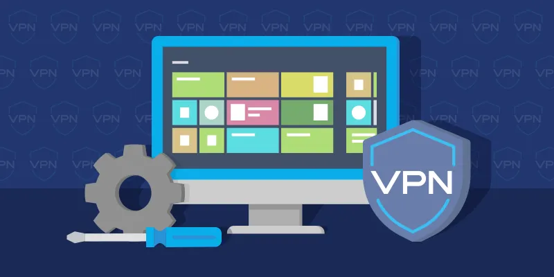

VPN Opzetten

Voor dit project heb ik een Virtual Private Network (VPN) opgezet. Het doel was om een beveiligde tunnel te creëren voor het verzenden van data tussen gebruikers en het netwerk, zodat vertrouwelijke informatie beschermd wordt tegen hackers.
Implementatie Stappen
Installatie van VPN-server
Ik koos voor open-source VPN-software en configureerde een server.
Versleuteling instellen
Ik zorgde ervoor dat alle data die via de VPN werd verzonden versleuteld was, zodat derden deze niet konden afluisteren.
Gebruikersbeheer
Ik stelde toegangsregels in voor gebruikers, zodat alleen geautoriseerde medewerkers toegang hadden tot het netwerk.
Voor- en Nadelen
Voordelen
- Verbeterde privacy: VPN’s versleutelen internetverkeer, wat de privacy van gebruikers verhoogt.
- Veilige toegang op afstand: Werknemers kunnen veilig verbinding maken met het bedrijfsnetwerk, zelfs vanaf externe locaties.
- Beveiliging op openbare netwerken: VPN’s beschermen gebruikers op openbare Wi-Fi-netwerken.
Nadelen
- Verlies van snelheid: VPN’s kunnen de internetsnelheid verminderen vanwege de versleuteling.
- Complexe configuratie: Het correct opzetten van een VPN vereist technische kennis.
Conclusie
Dit project gaf me inzicht in hoe VPN’s werken en waarom ze een cruciale rol spelen in netwerkbeveiliging, vooral in een wereld waar werken op afstand steeds gebruikelijker wordt.